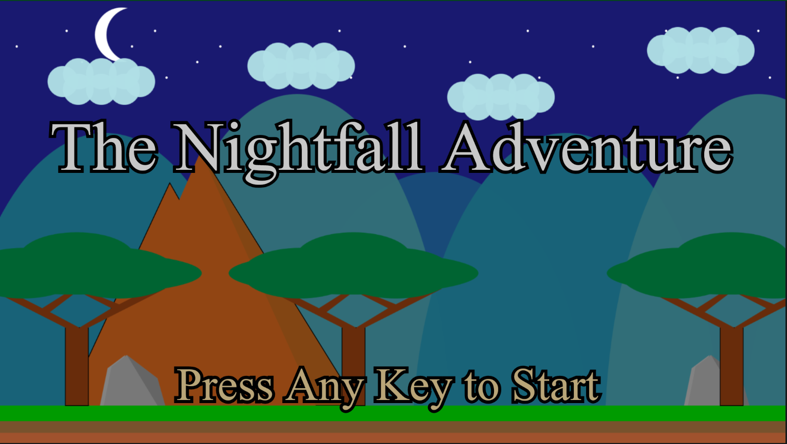

PORTFOLIO


With over 17 years of experience in the steel fabrication industry, I cultivated a passion for proactively engaging in self-directed learning and research, acquiring knowledge across various subjects. I applied critical thinking to integrate and utilize new skills effectively, driving innovation and improvement.
Get startedI am currently pursuing a Bachelor's degree in Computer Science through the University of London's online program. Additionally, I have earned certifications such as the University of London Introduction to Computer Science and Programming Specialization, Google IT Support Professional Certificate, and IBM Data Science Professional Certificate.,
I have over 6 years of experience monitoring projects, ensuring their on-time and within-budget completion. I have leveraged mathematical principles, such as the Pythagorean theorem, to streamline workflows and significantly reduce fabrication time. Additionally, I hold certifications such as the City of Los Angeles Quality Control in Welding Inspection and Steel Fabrication, and the Google Project Management Specialization.
Throughout my career in the steel and fabrication industry, I have developed key abilities such as adaptability and critical thinking, which have set me apart and enabled me to grow not only within the industry but also beyond my day-to-day responsibilities, driving the development of additional skills.
GAME DEVELOPMENT: I designed and developed a 2D Video Game, implementing the motions and interactions of the game with the help of the P5.js library in JavaScript.
DATA SCIENCE: I applied Data Science to analyze a SpaceX dataset to determine the likelihood of a first-stage landing, estimating the final cost of a launch, and evaluating whether the success of a launch depends on the location and proximity of the launch site.
PROJECT MANAGEMENT: I create and maintain documentation to streamline communication, ensuring teams have access to the tools and information they need. I monitor projects to ensure timely and within-budget completion, while verifying adherence to fabrication standards.
GENERAL FOREMAN QC: I developed and implemented processes that reduced fabrication time by applying mathematical principles. Notably, I used the Pythagorean theorem to fabricate hundreds of stair stringers, optimizing workflows and driving efficiency improvements.
STEEL AND FABRICATION: I have worked on projects ranging from small artistic pieces that sit on a desk to structural projects requiring heavy machinery for installation. Over the course of my career, I have earned multiple welding certifications, which not only allowed me to grow professionally but also highlight my commitment to continuous learning.
3D MODELLING: I have experience in 3D modeling and design using SketchUp and SolidWorks, which has helped me throughout my career to identify potential issues before moving to the fabrication phase.
CONTACT ME
(012) 345-67-89
JonathanScott@email.com
San Diego CA